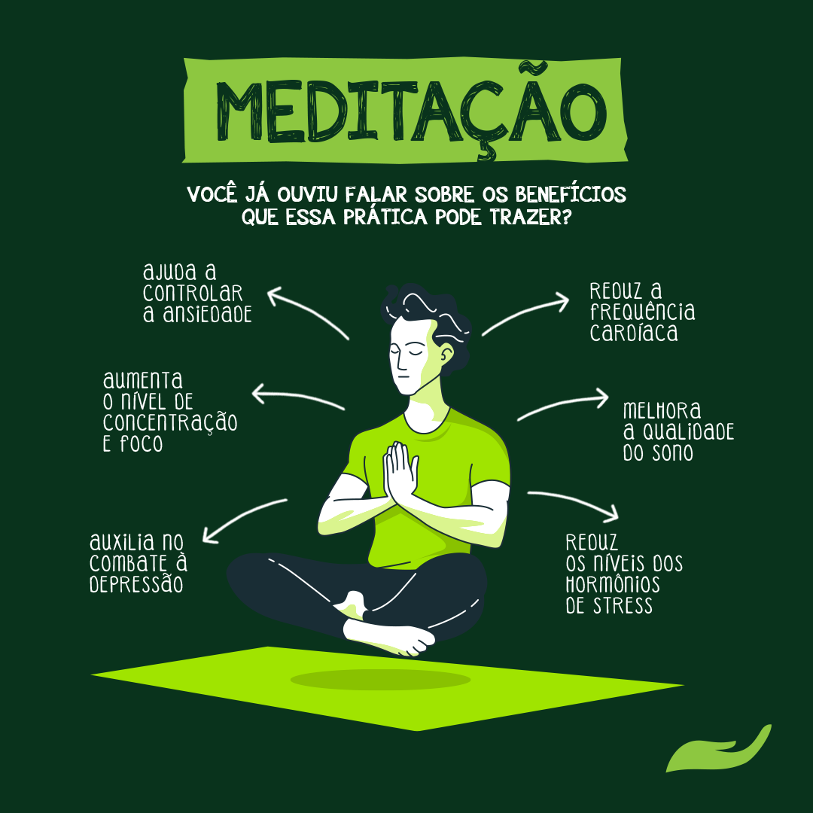

Estratégias para Manter a Saúde Mental
A saúde mental é tão importante quanto a saúde física. Aqui estão algumas estratégias:
- Meditação: Reserve alguns minutos do seu dia para meditar. Isso ajuda a reduzir o estresse e aumentar a concentração.
- Exercícios de Respiração: Pratique técnicas de respiração para acalmar a mente.
- Conexões Sociais: Mantenha contato regular com amigos e familiares. Uma boa conversa pode levantar o ânimo.
- Diário: Escrever sobre seus sentimentos pode ajudar a processá-los.
